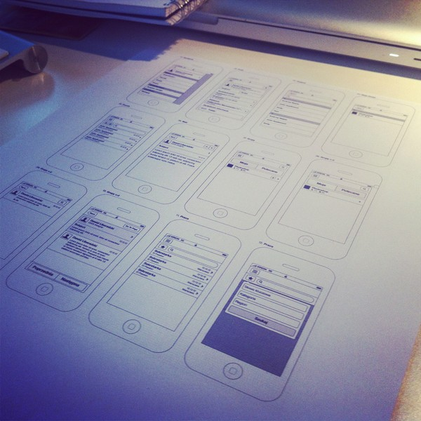
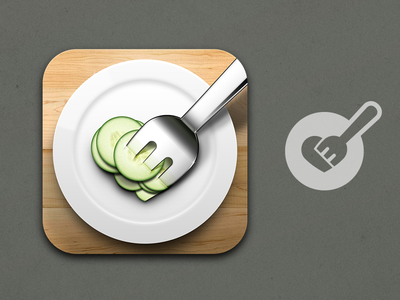

继续话题，什么是重构
Go on,The meaning of web rebuild.
我们从开发流程说起，web的开发流程大概是这样的：

产品策划

交互设计

视觉设计
这不是一个容易干的活
- 1. 100%的视觉还原，1px都不能少
- 2. html结构利于js开发


三，未来的重构
The future of web rebuild.

1.Phonegap
PhoneGap is an open source framework for quickly building cross-platform mobile apps using HTML5, Javascript and CSS.